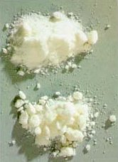
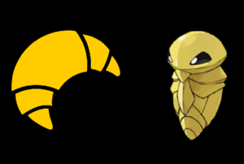

Cruasán
 De: La Frikipedia, la enciclopedia extremadamente seria.
De: La Frikipedia, la enciclopedia extremadamente seria.
| De la serie alimentos y otras vainas:
|
|
|
| Nombre:
|
Cruasán, Croissant, Cruassiant, Mierda...
|
| Tipo de Comida:
|
Agua-Eléctrico
|
| ¿Como se Come?
|
Con las manos, a no ser que seas manco, que en su caso se hace con los muñones
|
| ¿De donde Proviene?
|
Oh, la lá, la belle Frânce
|
| Ingrediente Basico:
|
Veneno, mierda, hagua, veneno, hojaldre...
|
| Forma de Presentación
|
Se empieza con "Damas y Caballeros" y al final los aplausos
|
| Sabor:
|
Nadie ha acabado de saberlo del todo Mwahahahahahha...
|
«Oh, qué rico Cruasán... Un momento... ¿No tiene chocolate? Me cago en la @#$!&»
~ Tu intentando comerte un Cruasán
«Un día iré a Francia y me comeré un cruasán delante de la torre Eiffel»
~ Yamcha y sus cavilaciones
«Jajajajajjajajjajjajajajajjaajajaj xddddd jajjajajajaj XDDD aahaajjajaahahah...»
~ Napolitana riéndose de los cruasanes por Messenger
«¿Cuantos cruasanes hacen falta para enroscar una bombilla?»
~ Albert Einstein lanzando una pregunta al aire
«Para qué cojones quieren unos cruasanes luz, a ver, explícamelo pamplinas»
~ Isaac Newton respondiendo a Einstein desde el pasado
«¿Y tu que haces aquí?»
~ Einstein siguiendo con el interrogatorio
«He construido una máquina que hace avanzar en el tiempo, pero no se como volver»
~ Newton respondiendo
«* facepalm* »
~ Einstein haciendo un facepalm
«ajajjkajajjaajajaljalajakjakjaksjkladjlaksj»
~ Napolitana que sigue riéndose de los cruasanes, ésta vez por Skype
El chocolate es en realidad la
sangre de los cruasanes
Un cruasán es una criatura malévola que habita en las pastelerías y armarios de Gourmets de todo el mundo, que en realidad es otra estratagema de Hacendado para dominar el mundo, como siempre.
Se trata de una compleja mezcla de hidrocarburos derivada del petróleo que es iningerible para paladares humanos y altamente venenosa. Pero aún así, la gente se lo come igualmente, a veces acompañado de leche o destripado y relleno de mermelada... (Que es verdaderamente asqueroso)
Hay quien los prefiere con chocolate y hay quién los prefiere sin. Pero obviamente todos lo preferimos con chocolate porque somos unos Gourmets sibaritas de la alimentación baja en grasas, proteínas y todas esas chorradas que los "Científicos" dicen que tienen los alimentos. Pero todos sabemos que los científicos hacen esas cosas para "evitar el consumismo excesivo y la obesidad en el planeta" y blá, blá y blá y demás patrañas.
El cruasán suele tener forma de media luna debido a los ritos satánicos que se organizaban a su beneficio y su color tiende a tener una tonalidad como de color verde fosforito, pero los daltónicos siempre dicen que tienen un color anaranjado-rojizo pastelero por culpa del hojaldre. Pero como iba diciendo es por el efecto de la reflexión de los vectores aplicada a la física cruasántica avanzada for Dummies.
Historia
La historia del cruasán se remonta a tiempos tan intempestivos como los que eran hace tres millones de años, nada más y nada menos, exacto. Y antiguas leyendas atribuyen el fallo de crear pastelitos con forma fálica a los moros homosexuales de la época. El origen del cruasán provendría de una adaptación hecha por unos plagiadores de ese símbolo característico de la Musulmanidad, pero los acontecimientos que dieron lugar al nacimiento del cruasán tienen que ver más con la leyenda que con una realidad histórica comprobada. Los autores sólo coinciden en que apareció en Albacete.
La leyenda más divulgada cuenta que el crusán nace como uno de los siete estandartes de la cristiandad y la superioridad aria de la 2a guerra mundial, sería el desencadenante del holocausto de Hitler y el principal problema de Corea del Norte, India, China e Indochina.
Su malévola composición, fue descubierta por un australopitechus inmortal radiactivo superdotado que no tenía otra cosa que hacer que probar cosas mezcladas con veneno, porque como era inmortal, qué más le daba. A eso que cogió un poco de veneno, un poco de azufre y un poco de levadura caducada. Mezclandolo todo con un par de huevos.
(Bueno, después de éste pedazo de chiste sersuarl el autor se ha quedado sin recursos humorísticos)
Y metió la mezcla alrededor de su censurado y salió con esa característica forma. Lo gracioso es que los autrolopithecus no fueron los inventores del fuego y ni mucho menos de la escritura, pero recordemos que éste era inmortal y superdotado...
Una ingesta excesiva de cruasanes produce efectos como éstos
El australopitechus, mantuvo la receta hasta que un consumo excesivo de cruasanes en vena hizo que su colesterol sobrepasara la línea y la palmara. (Imagináos, un porrón de cruasanes hace que un inmortal la palme. Temedlos.)
Un mendigo recogió la receta en pleno siglo XIV y la usó de papel higiénico, lo que añadió un nuevo ingrediente al cruasán. (No, no es el chocolate, que hasta que en el 1492 Colón blancura impecable descubra América de una vez, que ya está tardando, no se va a poder añadir el chocolate, leñe.)
Avancemos en el tiempo con el Delórean hasta llegar hasta el siglo XVI, dónde ya estará el cacao y el chocolate recién hecho por un elfo yonki de Papá Noel, actual poseedor de la receta. (No, no vamos a explicar como una receta ha llegado al Polo Norte) Y al elfo no se le ocurre nada mejor que rellenar los cruasanes con el chocolate, haciendo del cruasan una verdadera bomba de colesterol.
Lo que nos lleva a la pregunta...
¿Por qué crees que Santa Claus está gordo?
(Pues porque el cruasán fue el regalo del elfo yonki por el cumpleaños de Papá Noel)
Lo que nos lleva a la pregunta...
¿Y el cumpleaños de Papá Noel cuando es?
(Pues si el día que trabaja es solo uno, por descarte su cumpleaños tiene que ser cada día excepto navidad)
Lo que nos lleva a la pregunta...
¿Y Papá Noel cuantos años tendrá?
(Y yo que coño se, pesao, déjame vivir, déjame, al final te voy a acabar denunciando, pelmazo)
Receta para hacer un cruasán
 ¿Qué será? ¿Levadura? ¿Azúcar? ¿Sal?
¿Cocaína? Ingredientes para hacer 12 croissants:
- Levadura caducada: 30 gramos
- Azúcar glasé: 15 gramos
- Leche: 1 dl y 1/2
- Harina: 450 gramos
- Sal: 1 pizca
- Mantequilla: 180 gramos
- Huevos: 2 unidades
(¿Qué casualidad no?)
- Pocholate: Unos 500 gramos
- Veneno en polvo: Al gusto del consumidor.
- Arsénico: Al gusto del consumidor.
- Azufre: 281 gramos. Ni más ni menos.
- Drogaína: Al gusto.
- Leche de cabra en polvo: Al gusto.
- Polvo: También al gusto.
Preparación:
En un bol, poner la levadura, el azúcar, el azufre y el arsénico y mezclarlo con la leche. Se deja reposar la mezcla durante 10 horas.
A parte, mezclar la harina, con un poco de sal y de mantequilla, unos 50 gramos.
Hacer un volcán con la harina y el azufre y añadir, en el centro, un huevo batido y la mezcla de la levadura preparada anteriormente. Poco a poco, y con cuidado, se va llevando la harina hacia al centro mezclándola bien con el resto de los ingredientes
Se va trabajando la masa con las manos hasta que empieza a tener consistencia y se puede empezar a trabajar con el rodillo. Ahora se cubre la masa alrededor del censurado y se le da la forma.
Ahora por dentro se le mete chocolate hasta que explote y se le espolvorea levemente una capa de veneno en polvo y se meten en el horno.
Y al cabo de la pequeña espera de 14 días, 3 horas y 27 minutos podremos disfrutar de unos croissants-cruasanes listos para matar a alguien.
Bon appétit
Partes de un cruasán
Partes de un cruasán (click para ampliar)
Aiva la ostia Patxi, que dicen que los cruasanes son más fuertes que nosotros
- Brazo izquierdo: Es el brazo que no es el derecho. No sirve de mucho ya que no tiene movilidad alguna, pero bueno, ahí está. No hace gran cosa, ni se mueve, por culpa de tanto músculo, ni hace bonito, ya que es realmente horrendo, pero bueno, una cosa si que hace, estarse quieto.
- Brazo derecho: Es el brazo que no es el izquierdo. No sirve de mucho ya que no tiene movilidad alguna, pero bueno, ahí está. No hace gran cosa, ni se mueve, por culpa de tanto músculo, ni hace bonito, ya que es realmente horrendo, pero bueno, una cosa si que hace, estarse quieto.
- Muñones: A falta de manos buenos son los muñones, decía Shakespire, y no les sirven de mucho tampoco, ya que suele ser lo primero que les amputan antes de comérselos, ¿pobrecillos? Yo diría que no. Porque es dónde tienen la mayor concentración de veneno.
- Boca asesina: Es por donde comen los cruasanes cuando tienen que comer algo que sea lo suficientemente comestible para los cruasanes, hablando de comida, obviamente, y comen personas. He dicho. Personas.
- Músculos hyper-mazados: Pues los cruasanes van al gimnasio y se dedican a hacer ciclos sanos de repeticiones, y no veas que brazacos que gastan los desgraciaos, ni Joe Swanson de Padre de Familia tiene los brazos que tienen los cruasanes. Flipa, flipa.
- Pliegues asesinos: Reserva secreta de veneno de los cruasanes, ¿nunca sabes cuando puedes necesitar una dosis extra de veneno? Pues estás de suerte, los cruasanes tienen de sobra, porque más del 79,12% de la superfície y el contenido de los cruasanes es (no lo adivinaréis...) ¡¡Es veneno!! ¡¡Increíble!! Dancemos todos juntos para celebrarlo. (Bueno, ya está)
- Espalda hyper-mazada: A parte de tener los brazos hyper-mazados también tienen la espalda ahi con unos músculos que parecen tumores de lo fuertes y gordos que están. Pues no les sirve de mucho, porque al tener tanta masa muscular no pueden acabar de cerrar ni abrir los brazos y no se pueden mover, son las consecuencias de la halterofilia... Pero bueno, los hobbys son los hobbys.
- Personas atrapadas dentro: Pues personas que han caído a la tentación y se han quedado atrapadas dentro de un cruasán en vez del cruasán dentro de ellas, pasa muy pocas veces, pero pasa. Así que más vale tener cuidado o... Bueno, te quedas atrapado dentro del cruasán y la única manera de escapar es comértelo por dentro, pero tú seguramente estarás acostumbrado a comerte censurado a dos manos.
Variantes de cruasán
Cruasán con extra de drogaína
Cruasán para los más ricos
Nuevo sabor, a la venta en los mejores Mercadona's de tu city
Y éste es el favorito de las abuelas
- Cruasán normal: Pues eso. Los cruasanes sin nada dentro. No saben a nada. Bueno, saben como a periódico mojado, pero como nadie se los quiere comer, pues eso.
- Cruasán blando del super que viene en bolsitas individuales: Los favoritos de los abuelos. Son como los de arriba pero blandos, para que tengas que masticar menos.
- Cruasán espolvoreado con virutas de chocolate. Te crees que tiene chocolate por dentro cuando lo compras y al llegar a casa, ZASCA te quedas perplejo ante la imagen que te deja haberte gastado el dinero en semejante porquería.
- Cruasán de chocolate: El único que vale la pena. Sabe a chocolate, pero seguramente la empresa te time y te ponga chocolate por los bordes y una fina capa de chocolate por dentro, pero algo es algo.
- Cruasán bañado en chocolate: En vez de llevar el chocolate por dentro, lo lleva por fuera, lo malo es que por dentro no tiene nada más que veneno amasao.
- Cruasán con solo las puntas bañadas en chocolate: Es el cruasán bañado en chocolate de los pobres.
- Cruasancitos de chocolate con azúcar glasse por encima que son todo blancos y que vienen en cajas: Los típicos cruasanes que tienen el polvo de las ensaimadas por encima que lo primero que haces es lamerlo cual censurado. Si no fuera por el chocolate nadie los compraría realmente. Para eso tienes las ensaimadas.
- Cruasán con mermelada: Cuando los abuelos quieren una nueva experiencia de sabor y placer y tiran la casa por la ventana y deciden abrir el cruasán normal por la mitad y meter mermelada dentro, una nueva estrella se añade al firmamento. Es una explosión de sabores y toda una historia que contar a los nietos.
- Cruasán con mermelada de fresa: El cruasán favorito de los abuelos con la mermelada favorita de los niños. Parece que no, pero los niños se lo van comiendo.
Y envenenando lentamente
- Cruasán con mermelada de albaricoque: El cruasán favorito de los abuelos con la mermelada favorita de los abuelos. Se lo pasan bomba, cuando pilla ese color característico de verde anaranjado de la mermelada, verles la cara de felicidad a los abuelos es todo un reto.
- Cruasán con mermelada de arándanos: El cruasán favorito de los abuelos con la mermelada favorita de... ¿nadie?
¿Quién cojones ha puesto éste tipo de cruasán si es una mierda primeriza que nadie se comería porque a nadie con gusto que funcione le gusta ése pedazo de mierda de mermelada, la virgen que mala está. Una vez me comí uno y estuve como media hora en la taza del váter dándolo todo, en serio que asco de mermelada.
- Cruasán mini: Son bebés cruasán, que saben a cruasán con un toque de placenta y extra de cruasán.
- Cruasán mini de frankfurt: Son cruasanes mini sodomizados por una salchicha de frankfurt pidórfila. Pero los más buenos son los del Opencor. He probado otros y no es lo mismo.
- Cruasán mini de jamón y queso: Hijo bastardo entre un cruasán normal y un bikini, no no es un bikini de los que cubren las ubres de las chavalas (y no tan chavalas) en verano. Me refiero al bocadillo ese de "Pan Bimbo" con Jamón york y queso.
- Cruasán mini relleno de crema: Cruasán mini normal relleno de la cosa que solo le gusta a una pequeña fracción de los habitantes de la tierra. La crema. Qué cojones, no tiene un sabor definido, nadie sabe qué lleva y todo el mundo sabe como sabe. Es gracioso como se pueden hacer trabalenguas con eso.
- Cruasán solo con mantequilla: Para los que les gustan las emociones fuertes, tenemos el cruasán con solo mantequilla, no apto para paladares delicados. Sabe a mantequilla. Extraño es que sepa a mantequilla cuando solo contiene mantequilla ¿no?
- Cruasans del Mercadona: El mercadona (y hacendado) es un lugar actívamente hablando, rebosante de ideas de rellenos de cruasán, tienen cruasanes tan apetecibles como:
- Cruasán de Sobrasada: La famosa cosa naranja característica de Mallorca, que tiene sabor salado. Básicamente son tripas de cerdo.
- Cruasán de tortilla: Creo que estos no necesitan explicación.
- Cruasán de atún: Y éstos tampoco. A la gente le gusta el atún, eso es todo.
- Cruasán de tripas de
IP anónima cerdo, pero sin llegar a ser sobrasada, ahi a medias, como una pechá: Eh... Bueno. Creo que ya.
Cómo comerse un cruasán sin morir en el intento
 Un Kakuna se asemeja bastante a un cruasán ¿No os parece?
Verdaderamente asqueroso...
- Debes conocer un lugar donde los vendan, si no conoces ninguno, prodece a escribir en Google: "HOYGAN AHONDE PUHEDO KOMPRAHAR KRUAZANES N <inserte nombre de su ciudad aquí> GRAHASIAS D HANTEBRASO"
- Cuando tengas el lugar localizado tienes que conseguir un medio de transporte, tus pies pueden servir.
(En caso de ir en silla de ruedas, cámbiese "pies por "silla de ruedas")
- Abre la puerta de tu cuarto.
- Sal del cuarto.
- Sal de la casa y ve a la dirección del local.
- Entra en la tienda y dí: "Buenos días"
- Pide que te vendan cruasanes, que no parezca que lo necesitas.
- Paga por su precio o mata al dependiente y huye corriendo, tú decides.
- Vuelve a tu casa.
- Abre la puerta.
- Ciérrala, que antes te la habías dejado abierta, irresponsable.
- Saca los cruasanes de la bolsa.
- Abre la boca.
- Mete un cruasán dentro de la boca.
- Mueve la mandíbula arriba y abajo, tu cabeza no hace falta que la muevas, tranquilo, los músculos trabajarán por ti.
- Trágate el cruasán.
Maneras de pronunciar Cruasán
Pues tienen forma de cangrejo ¿no?
- Francés: Cgo-e-ssant
- Inglés: Cruasanteishon
- Castellano: Cruasán
- Catalán: Crusan-euru
- Gallego: Crus-an-neno
- Euskera: Cruskaikoaivalaostia
- Chino: 我知道你已經使用了谷歌翻譯這個 ...
- Demás idiomas: Croissant
¿Sabías que...
... pueden ser usados como Boomerang?
- ... si cuentas cuantas veces aparece la palabra "cruasán" en el artículo te dan un premio?
- ... lo de arriba es mentira?
- ... los cruasanes no pueden esquiar?
- ... ardilla ardilla ardillorum?
- ... mezlcar Red Bull con cruasanes no es buena idea?
- ... mezclar café con cruasanes es peor que mezclarlo con Red Bull?
- ... el autor de éste artículo está obeso perdío?
- ... hacendado algún día no muy lejano, dominará el mundo?
Autor(es):
- Harry El del Pote
- Genericool
- Axelaxel12
- Generibot
- Rofl Copter!
- Tontoelquelolea
- Sergiosnchez9
Frikipedia 2005-2016, Licencia
GFDL 1.2 - Extraído por FrikiLeaks
 Alimentos
Alimentos 
{kind=link}